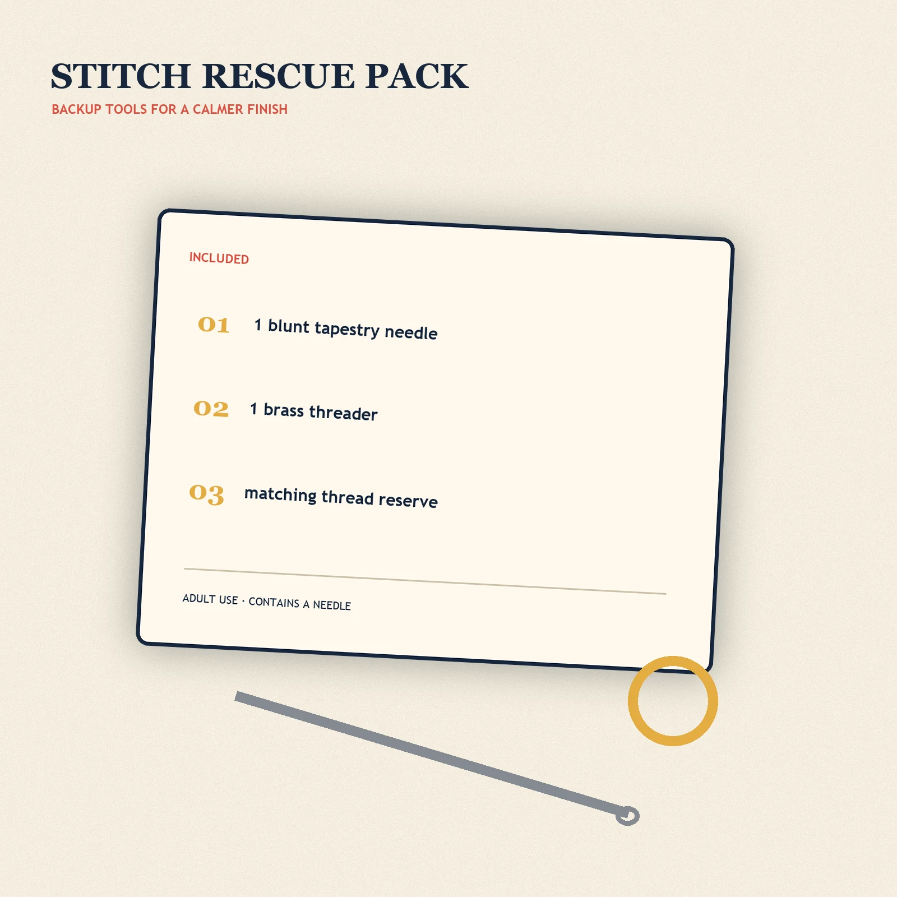

Practical add-on
Stitch Rescue Pack
Backup threader, blunt needle, and matching repair thread for a calmer finish.
$7.00 USD
Pre-launch preview. This product is not for sale until its sample, material, cost, safety, and ship-date gates pass.
Join the founding dropIncludesNeedle, threader, thread reserve
CompatibilityFirst Thread Studio kits
SafetyAdult use; contains a needle
A compact backup pack for the two tiny things most likely to disappear mid-project. The planned Stitch Rescue Pack includes one blunt tapestry needle, one needle threader, and a small matching thread reserve selected for the kit in your order.
This is a service add-on, not a substitute for a full kit. It is intended for active First Thread Studio projects and will be offered only with a compatible kit.
- 1 blunt tapestry needle
- 1 needle threader
- Matching thread reserve
- Adult use; contains a needle
Pre-launch note: component specifications are pending supplier and safety review.